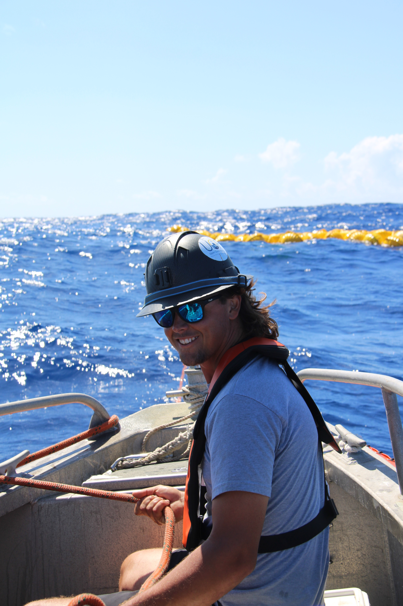
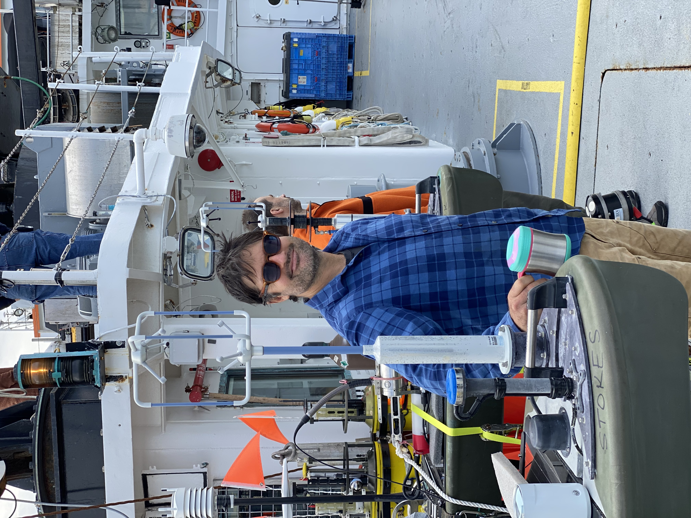
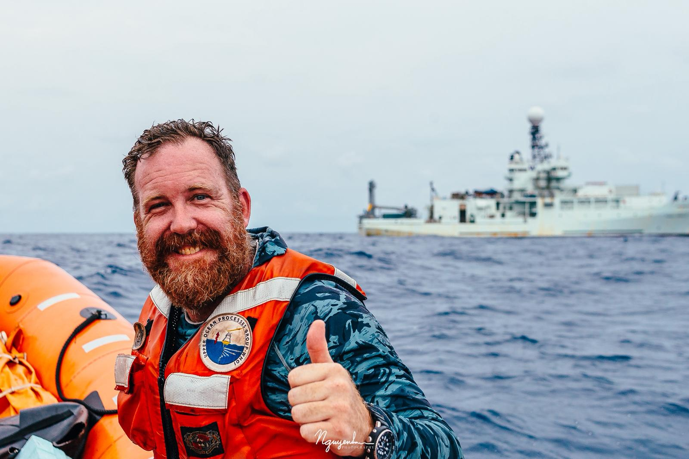
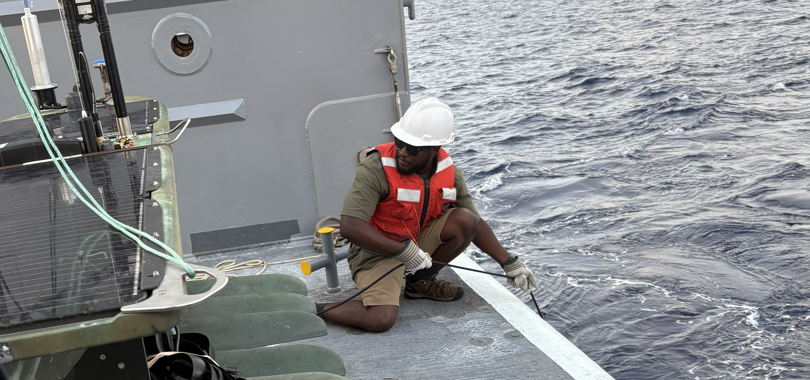

Iury Simoes-Sousa
Postdoctoral Scholar
The current team page is complete but visually flat. This version keeps the same basic information while making current collaborators easier to scan and former members easier to summarize.
Part of the WHOI Upper Ocean Processes Group, spanning research associates, engineers, and postdoctoral scholars.
Postdoctoral Scholar
Research Associate

Senior Engineering Assistant

Research Engineer

Senior Engineering Assistant

Engineer
A complete version would ideally keep the full former-member record, but on-page it is stronger to summarize trajectories and make the current group more prominent.